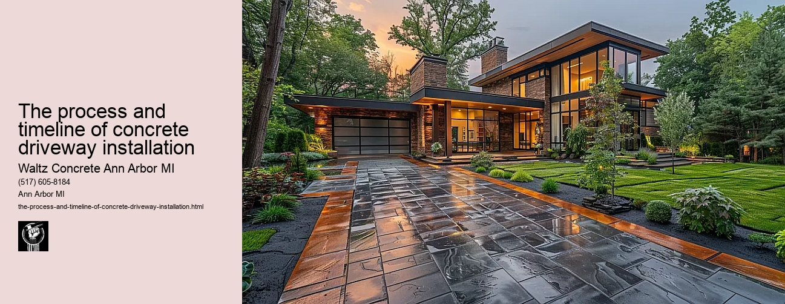

News
Concrete Driveway Installation Ann Arbor Mi
Concrete Driveway Installation Ann Arbor Mi
Choosing the right contractor for installation
Cost of concrete driveway installation in Ann Arbor
Permit requirements for driveway installation in Ann Arbor
The process and timeline of concrete driveway installation
Different types of concrete used in driveways
Maintenance and Repair of Concrete Driveways in Ann Arbor Mi
Maintenance and Repair of Concrete Driveways in Ann Arbor Mi
Preventive maintenance tips for durability
Common causes for concrete driveway damage
Professional companies offering repair services in Ann Arbor
Doityourself versus professional repairs
Costs associated with repairing a concrete driveway
Designs and Styles of Concrete Driveways in Ann Arbor Mi
Designs and Styles of Concrete Driveways in Ann Arbor Mi
Popular design trends for driveways
Considering climate factors when choosing a design or style
Unique customizations available for concrete driveways
Influence of home architecture on driveway design
Stamped stained and decorative options
Environmental Impact of Concrete Driveways in Ann Arbor Mi
Environmental Impact of Concrete Driveways in Ann Arbor Mi
Carbon footprint associated with concrete production
Use of sustainable materials in concrete driveways
Drainage considerations to reduce environmental impact
Local regulations regarding environmentally friendly driveways
Potential use of permeable or porous pavement
Alternatives to Concrete Driveways in Ann Arbor Mi
Alternatives to Concrete Driveways in Ann Arbor Mi
Asphalt driveways and their proscons
Paver stone driveways and their benefitsdrawbacks
Gravel or crushed stone as an alternative option
Comparing costs between different driveway materials
Resinbound surfaces as emerging technology
About Us
Contact Us

The process and timeline of concrete driveway installation
The process and timeline of concrete driveway installation
Title: Understanding the Process and Timeline of Concrete Driveway Installation
When it comes to boosting curb appeal and enhancing the functionality of our homes, installing a concrete driveway proves to be an excellent investment. However, this process isn't as simple as pouring cement onto a flat surface. It involves meticulously planned steps that require expertise and precision. Moreover, understanding the timeline for installation is crucial for managing expectations and planning usage accordingly.
The process begins with site preparation which usually takes about a day or two depending on the size of your driveway. This step involves clearing the area of any debris, grass or plants and excavating soil if necessary. The ground needs to be leveled properly to ensure proper drainage and prevent any future issues like cracking.
Next comes form setting where wooden boards are used to create an outline for your driveway. This step requires accuracy in order to achieve the desired shape, width, length and thickness of your driveway. This can typically be completed in a day.
Following this is base placement where a sub-base material is spread over the prepared site to provide stability to your concrete driveway. The commonly used materials include crushed stone or gravel because they offer good compaction properties.
Subsequently, we move on to reinforcement which often involves placing steel rebar grids or wire mesh into the forms before pouring concrete. Reinforcement ensures durability under heavy weight loads like vehicles.
After these steps have been diligently carried out comes one of the most significant stages - pouring concrete itself which can take another 1-2 days depending on weather conditions as well as project's complexity. An expert team will pour concrete evenly across all areas, ensuring that no part is missed.
Once poured, professionals use specialized tools such as trowels and edgers for smoothing the surface while its still wet. After leveling has been done correctly comes curing stage which typically lasts around 28 days but could extend up to 45 days based on environmental factors like temperature or humidity.
The final step in the installation process is sealing. Applying a high-quality sealer helps to protect your concrete driveway from moisture absorption, chemical exposure, grease stains, and more. A sealed driveway also enhances its appearance making it look newer for longer.
In conclusion, while the actual time spent working on installing a concrete driveway might range between 3-5 days depending on size and complexity of project; factoring in curing time makes the entire process last up to six weeks or so. It's essential to remember that rushing any stage could compromise the longevity and functionality of your driveway. Hence patience is key when investing in a concrete driveway installation.
Permit requirements for driveway installation in Ann Arbor
The process and timeline of concrete driveway installation
Frequently Asked Questions
What is the process of concrete driveway installation in Ann Arbor, MI?
The process begins with planning and layout, followed by excavation of the site. Next is setting up forms for the driveways shape and slope, then pouring and leveling the concrete. After it dries, sealing takes place to protect it.
How long does it take to install a concrete driveway in Ann Arbor, MI?
Depending on weather conditions and size of your project, the installation of a concrete driveway can take anywhere from 1 to 2 weeks. This includes time for preparation, pouring the concrete, letting it cure properly before removing forms and applying sealant.
What are local regulations or permits required for installing a concrete driveway in Ann Arbor, MI?
In most cases you will need to secure a permit from City of Ann Arbor Building Department before starting your project. Its also important to check any Homeowner Association (HOA) rules that may apply as well as city-specific guidelines like drainage requirements or sidewalk regulations.
The process and timeline of concrete driveway installation